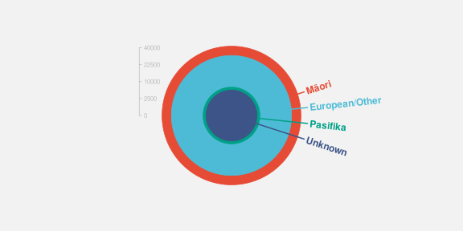
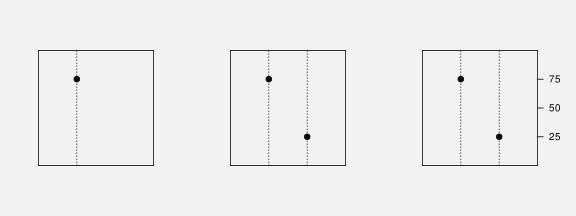
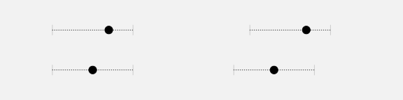
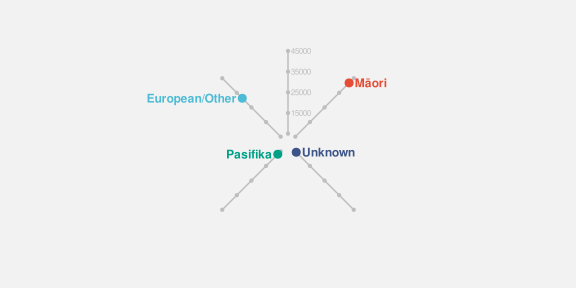
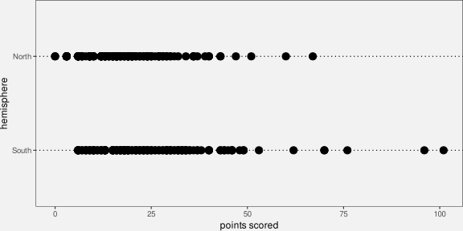
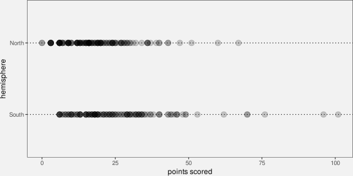
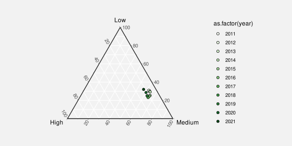
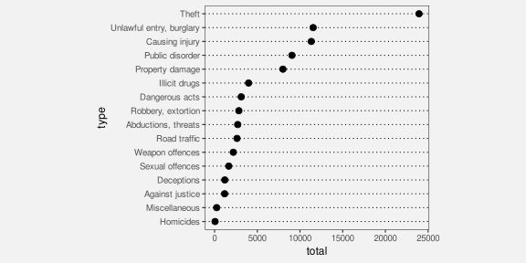
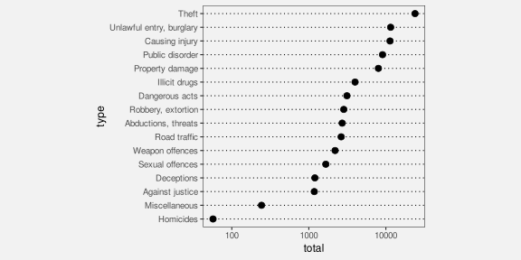
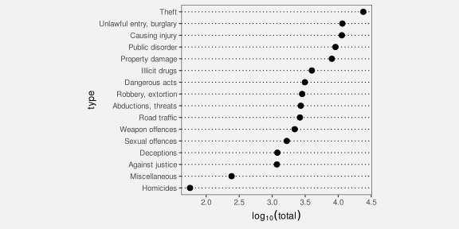

4 Position
We saw in Chapter 3 that position is a very effective visual feature. It is appropriate for mapping quantitative data values (Figure 3.7) and it is appropriate for mapping qualitative data values (Figure 3.9). Position is a visual feature with high accuracy (Figure 3.12) and with high capacity (Figure 3.15).1
This means that, if we do not encode data values as the position of data symbols, it can be more difficult to decode data values from the data symbols.2 For example, Figure 4.1 shows another data visualisation of the total number of offenders in New Zealand for different ethnic groups (Table 3.1). We have previously seen a bar plot (Figure 3.2), a dot plot (Figure 3.16), and a pie chart (Figure 3.17) of these data. In Figure 4.1, the data symbols are circles, the number of offenders is encoded as the area of the circles, and the ethnic groups are encoded as the colour of the circles. One reason why it is more difficult to decode data values from Figure 4.1, compared to, for example, Figure 3.2, is because none of the data values are encoded using position.
However, we have already seen several data visualisations that do not map all data values to position (e.g., Figure 1.1 and Figure 1.2), so there must be more to learn about mapping data values to basic visual features.3 In this chapter, we look more closely at the mapping of data values to the position of data symbols.
4.1 Perception is relative
In Section 3.5, we saw that position was the most accurate visual feature for decoding quantitative values (Figure 3.12). However, that accuracy is for relative judgements rather than absolute judgements. In other words, we are good at comparisons between positions,4 which is one of the most important decoding tasks in data visualisation.5
For example, the box on the left of Figure 4.2 shows a dot at a vertical positon along a dotted line. We can decode an amount from the position of the dot, but only relative to the ends of the dotted line; the dot is three-quarters of the way from the bottom to the top of the line. We cannot decode an absolute data value from the dot.6
The box in the middle of Figure 4.2 shows two dots at vertical positions along two dotted lines. Again, we can only compare the positions of the two dots—the dot on the left is three times as far up its dotted line as the dot on the right.
The box on the right of Figure 4.2 shows two dots again, but this time adds an axis on the right edge of the box. It is now possible to decode an absolute value for each dot (75 and 25), but that is still only possible by making comparisons. We decode the positions of the dots relative to the positions of the tick marks on the axis.

A data visualisation that encodes a data value as the position of a data symbol is effective because we can decode the comparisons between the positions accurately.
4.2 Unaligned position
We have established that position is a very accurate visual feature (Figure 3.12), although that accuracy is for comparisons rather than for decoding individual values. Another limitation on the accuracy of position is that it works best when the comparison is between positions with a common baseline. For example, it is easier to compare the two positions on the left of Figure 4.3 compared to the two positions on the right.

Figure 4.4 shows yet another data visualisation of the total number of offenders in New Zealand for different ethnic groups (Table 3.1). This data visualisation is similar to Figure 3.16 because it encodes the number of offenders to position along a line. However, it is harder to compare the number of offenders between different ethnic groups in Figure 4.4 because the positions are not aligned.

Decoding data values from positions is most effective when the positions share a common baseline.
4.3 Position is a scarce resource
In Section 3.6 we saw that position has a higher capacity for decoding qualitative data values compared to colour or pattern (Figure 3.15). However, position has a limitation that does not affect colour or pattern: if we use the same position for more than one data value, we end up drawing data symbols on top of each other.
For example, in Figure 4.1, we use the same position for all four circles that represent different ethnic groups, so the circles are drawn on top of each other. The total number of youth offenders for each ethnic group is encoded as the area of a circle. The largest number of offenders is for the Māori ethnic group–the orange circle—with European/Other the next largest—the light blue circle. However, because the light blue circle is drawn on top of the orange circle, all that we can actually see is the part of the orange circle that extends beyond the light blue circle.
This represents a serious problem. It is difficult for our visual system to decode from a data symbol to a data value if we cannot see all of the data symbol.7
One way to express this limitation is that position is very effective for encoding different data values, but it is not very effective for encoding the same data value.
Decoding more than one data value from two data symbols that share the same position is, at best, compromised because we cannot see all of both data symbols.
4.4 Case study: Overplotting
The Rugby World Cup is a competition that is held every four years, with the first event taking place in 1987. We have data on the the number of points that were scored in every World Cup match by Tier One nations (the top 10 rugby-playing nations). Table 4.1 shows a sample of these data.8
| team | hemisphere | scored |
|---|---|---|
| Argentina | South | 8 |
| Argentina | South | 18 |
| Argentina | South | 13 |
| Argentina | South | 28 |
| Argentina | South | 10 |
| Argentina | South | 7 |
Figure 4.5 shows a dot plot of the points scored in a match for all teams and all matches. This data visualisation has encoded the number of points scored as the horizontal position of data points. In theory, that allows us to decode from data points to a number of points scored. For example, we can see that one team from the southern hemisphere scored just over 100 points in one match.

However, as Table 4.2 shows, exactly the same number of points were scored by more than one team (from the same hemisphere) and/or in more than one match. This means that there are multiple data points at exactly the same position, which means that there are multiple data points drawn on top of each other, which in effect means that there are data points that we cannot see.
| team | hemisphere | scored |
|---|---|---|
| England | North | 0 |
| Scotland | North | 0 |
| England | North | 3 |
| Ireland | North | 3 |
| Ireland | North | 3 |
| Italy | North | 3 |
Although it is still possible to decode that, for example, at least one team from the northern hemisphere scored zero points in at least one match, it is not possible to decode whether that was just one team or just one match. We cannot decode an individual data value from each data symbol.9
Figure 4.6 shows the same data as Figure 4.5, but with the data points semi-transparent so that we can see that many of the points overlap. The same number of points was scored by multiple teams in multiple matches. This demonstrates one approach to resolving the problem of overplotting; we will see several other approaches in later chapters.

4.5 Cartesian coordinates
In Figure 4.5, we have encoded two sets of data values using position. The number of points is encoded as the horizontal position of the data points and the hemisphere of origin for each team is encoded as the vertical position of the data points. This cartesian coordinate system is effective because the visual system is better at decoding horizontal and vertical positions compared to oblique orientations like in Figure 4.4.10
Because the horizontal and vertical positions are perpendicular, Cartesian coordinates also mean that we can make use of position twice without the position encodings interfering with each other.11 For example, in Figure 4.5, we can decode which hemisphere that a data symbol is from separately from decoding how many points were scored. The fact that a team is from the northern hemisphere does not by itself imply anything about the number of points scored. Put another way, any difference between the data symbols for northern hemisphere teams and the data symbols for southern hemisphere teams must reflect something about the data.
A good example of a data visualisation that does not employ Cartesian coordinates is a pie chart, like Figure 3.17, though that is also a case where data values are not encoded as position.
Cartesian (perpendicular) coordinates are effective because we can encode data values using position twice; we can decode data values from horizontal positions and we can separately decode data values from vertical positions.
4.6 Case study: Ternary plots
Table 4.3 shows data on the severity of crimes committed by youth in New Zealand. For each year, we have the proportion of criminal offences that were low, medium, or high severity.12
| year | Low | Medium | High |
|---|---|---|---|
| 2011 | 0.306 | 0.624 | 0.070 |
| 2012 | 0.310 | 0.616 | 0.074 |
| 2013 | 0.296 | 0.631 | 0.074 |
| 2014 | 0.293 | 0.638 | 0.069 |
| 2015 | 0.254 | 0.656 | 0.090 |
| 2016 | 0.246 | 0.655 | 0.099 |
Figure 4.7 shows a ternary plot of these data.13 In this data visualisation, there are three variables (three proportions that sum to 1), and the data values from each variable has been encoded as position. However, the positions are along axes that are not perpendicular. This means that it is not as easy to decode individual data values or compare data values because we are poorer at decoding positions that are not horizontal or vertical. Furthermore, because the three proportions sum to 1, a change in one proportion necessitates a change in at least one of the others. In other words, we cannot easily decode the difference between two data values from the difference between two data symbols.

4.7 Non-linear mappings
Table 4.4 shows the total number of youth offenders broken down by type of crime. We have one qualitative variable, crime type, and one quantitative variable, total nunber of offenders.
| type | total |
|---|---|
| Abductions, threats | 2709 |
| Against justice | 1177 |
| Causing injury | 11326 |
| Dangerous acts | 3124 |
| Deceptions | 1198 |
| Homicides | 57 |
Figure 4.8 shows of dot plot of these data, with the total number of offenders encoded as the horizontal position of circles, one per type of crime. This plot is effective for comparing the total number of offenders between types of crime, both in terms of which crimes are more common than others and how much more common some crimes are than others. For example, we can see that theft is about twice as common as the next most common crime type.

The effectiveness of Figure 4.8 comes not only from the fact that data values are encoded as the position of data symbols, but also from the fact that the encoding is linear. In Figure 4.8, the horizontal difference between 0 offenders and 5,000 offenders is exactly the same horizontal distance as the difference between 5,000 offenders and 10,000 offenders. The effective decoding of position is dependent on this sort of linear encoding.14
When a small number of data values are considerably larger than the majority of data values, as in Figure 4.8, a non-linear scale is sometimes employed in order to see the differences between the smaller values more easily. For example, Figure 4.9 shows the same data and the same encodings, but with a log scale. Rather than encoding the total number of offenders as the position of the circles, the log (base 10) of the total number of offenders is encoded as the position of the circles.15

Unfortunately, as a result of the non-linear horizontal scale, we lose the accuracy of the position encoding. We can no longer accurately decode from position to data values because the same horizontal distance means different things in terms of data values at different locations along the x-axis. For example, it is difficult to decode the number of offenders for Miscellaneous crimes; the position of the circle data symbol is visually roughly half-way between 100 and 1000, but the data value is not half-way between 100 and 1000. It is even more difficult to decode the size of the difference between the number of offenders for Miscellaneous crimes versus Homicides. Worse still, the difference between Miscellaneous and Homicide is visually very similar to the difference between Miscellaneous and crimes Against justice, but the differences between those data values are very different.
We can still decode simple ordinal information from Figure 4.9—which type of crimes are more common than others—but we have lost the ability to decode quantitative information from the positions of the data symbols. We have essentially lost information.
Figure 4.10 shows the logged data again, but this time with labels on the x-axis that show logged values rather than the original data values. This shows that, in terms of logged data values, the positions of the data symbols are linear. We can accurately decode from the positions of the circles in Figure 4.10, but only to recover logged data values. If we want to compare logged data values, this is fine, but usually what we want is to compare the original data values—we need to decode to a logged value and then raise 10 to that power. For example, the log of the number of offenders for Deceptions is approximately 3, so the number of offenders is approximately 1000. However, this mental transformation requires much more conscious effort for most people, so we effectively lose the benefit of using a data visualisation, at least for the purpose of decoding quantitative information (Section 2.9).

Although a non-linear encoding from data values to the positions of data symbols presents problems for decoding quantitative information, there are still situations where non-linear scales can be useful. For example, if we are only interested in ordinal comparisons, then non-linear positions may still be effective. We will see more examples in later sections (Section 6.7, Section 10.9).
The encoding of quantitative data as the position of data symbols is only effective for decoding quantitative data if the encoding is linear.
4.8 Summary
Mapping data values to the position of data symbols allows for effective decoding for both quantitative and qualitative information, with the following caveats:
For quantitative values, what we can accurately decode are comparisons between quantitative values, not absolute quantitative values.
The decoding is most accurate for positions that share a common baseline.
Encoding identical data values as the positions of data symbols means that the data symbols overlap, which compromises our ability to decode data values from the data symbols.
We can encode one set of data values as horizontal positions and another set of data values as vertical positions because we can decode horizontal and vertical positions separately.
Decoding quantitative data values from the positions of data symbols is only effective if the encoding is linear.
Amar, Robert, James Eagan, and John Stasko. 2005. “Low-Level Components of Analytic Activity in Information Visualization.” In Proceedings of the Proceedings of the 2005 IEEE Symposium on Information Visualization, 15. INFOVIS ’05. USA: IEEE Computer Society. https://doi.org/10.1109/INFOVIS.2005.24.
Appelle, Stuart. 1972. “Perception and Discrimination as a Function of Stimulus Orientation: The "Oblique Effect" in Man and Animals.” Psychological Bulletin 78 (4): 266–78. https://doi.org/10.1037/h0033117.
Begbie, Lyle. 2022. “International Rugby Union Results from 1871‑2022.” https://www.kaggle.com/datasets/lylebegbie/international-rugby-union-results-from-18712022/data; Kaggle.
Bertini, Enrico, Michael Correll, and Steven Franconeri. 2020. “Why Shouldn’t All Charts Be Scatter Plots? Beyond Precision-Driven Visualizations.” CoRR abs/2008.11310. https://arxiv.org/abs/2008.11310.
Cleveland, William S, and Robert McGill. 1984. “Graphical Perception: Theory, Experimentation, and Application to the Development of Graphical Methods.” Journal of the American Statistical Association 79 (387): 531–54.
Kubovy, Michael. 1981. “Concurrent-Pitch Segregation and the Theory of Indispensable Attributes.” In Perceptual Organization, edited by Michael Kubovy and James R. Pomeranz, 55–98. Hillsdale, New Jersey: Lawrence Erlbaum.
Li, Baowang, Matthew R. Peterson, and Ralph D. Freeman. 2003. “Oblique Effect: A Neural Basis in the Visual Cortex.” Journal of Neurophysiology 90 (1): 204–17. https://doi.org/10.1152/jn.00954.2002.
MacEachren, Alan M. 1995. How Maps Work: Representation, Visualization, and Design. 1st ed. New York: The Guilford Press.
Meirelles, Isabel. 2013. Design for Information: An Introduction to the Histories, Theories, and Best Practices Behind Effective Information Visualizations. Beverly, Massachusetts: Rockport Publishers.
Robinson, Arthur H., and Barbara Bartz Petchenik. 1976. The Nature of Maps: Essays Toward Understanding Maps and Mapping. Chicago: University of Chicago Press.
Tufte, Edward R. 1983. The Visual Display of Quantitative Information. Cheshire, Connecticut: Graphics Press.
———. 2006. Beautiful Evidence. Cheshire, CT: Graphics Press.
Tukey, John W. 1990. “Data-Based Graphics: Visual Display in the Decades to Come.” Statistical Science 5 (3): 327–39. http://www.jstor.org/stable/2245820.
Ware, Colin. 2021. Information Visualization: Perception for Design. 4th ed. Morgan Kaufmann.
Wilke, Claus O. 2019. Fundamentals of Data Visualization: A Primer on Making Informative and Compelling Figures. Sebastopol, CA: O’Reilly Media.
Ziemkiewicz, Caroline, and Robert Kosara. 2009. “Embedding Information Visualization Within Visual Representation.” In Advances in Information and Intelligent Systems, edited by Zbigniew W. Ras and William Ribarsky, 307–26. Berlin, Heidelberg: Springer Berlin Heidelberg. https://doi.org/10.1007/978-3-642-04141-9_15.
It can be argued that position is a visual feature that is fundamental to our perception of any image.
“There is fairly widespread philosophical agreement, which certainly accords with commonsense, that the spatial aspects of all existence are fundamental. Before an awareness of time, there is an awareness of relations in space.” (Robinson and Petchenik 1976, 14)
“The concept of spatial relatedness … is a quality without which it is difficult or impossible for the human mind to apprehend anything.” (Robinson and Petchenik 1976, 123)
“According to Kubovy (1981), position in space and time have a dominant role in perceptual organization. In relation to visual information displays, the contention for space as an indispensable variable seems indisputable. For centuries, humans in all cultures have “mapped” the nonvisible to space in order to facilitate understanding.” (MacEachren 1995; citing Kubovy 1981)
“We process spatial properties (position and size) separately from object properties (such as shape, color, texture, etc). Furthermore, position in space and time has a dominant role in perceptual organization, as well as in memory.” (Meirelles 2013)↩︎
Decoding individual data values from individual data symbols is not the only visual task that we need to perform, so it is not always true that we should encode data values as position. As we explore other sorts of mappings in later chapters, we will see reasons why position is not always best.↩︎
As Bertini, Correll, and Franconeri (2020) put it: “Why Shouldn’t All Charts Be Scatter Plots?”↩︎
In the experiments described in Cleveland and McGill (1984), which are the basis of the accuracy ranking in Figure 3.12, “subjects were asked to judge what percent the smaller is of the larger”.↩︎
Amar, Eagan, and Stasko (2005), in their taxonomy of visual tasks, consider a “low-level comparison as being a fundamental cognitive action” for reading a data visualisation.
“The fundamental task in data analysis is to make smart comparisons - we’re always trying to answer the question ‘Compared with what?’ […] It always comes down to making and showing smart comparisons.” (Tufte 2006, 127)
“Almost everything we do with data involves comparison” (Tukey 1990, 329)
“The lesson is that visualization is not good for representing precise absolute numerical values, but rather for displaying patterns of differences or changes over time, to which the eye and brain are extremely sensitive.”
(Ware 2021, 70)↩︎Even if we have mapped a proportion data value to the position of the dot, we would need to know that the bottom of the line represents 0 and the top of the line represents 1 to be able to correctly decode the proportion from the position of the dot.↩︎
Wilke (2019) refers to this problem as the principle of proportional ink. The amount of ink used to represent a data value should be proportional to the magnitude of the data value.
Another way to decode Figure 4.1 is that there is a thin orange disc outside a light blue disk (which is outside a thin green disk, which is outside a dark blue circle). In this interpretation, we can at least see all of the data symbol, so decoding is possible, but the problem now is that the viewer is using a decoding that is different from the encoding.
The concentric-circles interpretation is perhaps the most parsimonious (Section 2.8), but just the existence of an alternative interpretation is a potential source of confusion and so a cause for concern.↩︎
These data were obtained from kaggle (Begbie 2022).↩︎
In effect, more than one data value is encoded as the same data symbol, which means that we cannot decode back to individual data values. This is called a surjective mapping (Ziemkiewicz and Kosara 2009).↩︎
This preference for horizontal and vertical orientations is known as the oblique effect (Appelle 1972; Li, Peterson, and Freeman 2003)↩︎
Put mathematically, horizontal and vertical positions are orthogonal, which means that they are independent.↩︎
This form of data is called compositional data; it shows how a total is composed of its different parts.↩︎
Ternary plots, also known as barycentric plots, are common in specific areas of science, for example, Earth science where the composition of rocks or soils is studied.↩︎
“The representation of numbers should be directly proportional to the quantities represented.” (Tufte 1983)↩︎
The log (base 10) of the data values is the power to which we must raise 10 in order to get the data value. For example, if the data value is 100, the logged data value is 2.
\(10^2 = 100 \iff log_{10}(100) = 2\)↩︎